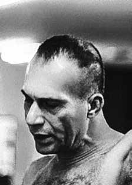

Carlos
Marighella
BIOGRAFIA
Político, guerrilheiro e poeta, Carlos Marighella vivenciou a repressão de dois regimes autoritários: o Estado Novo (1937-1945), de Getúlio Vargas, e a ditadura militar iniciada em 1964. Foi um dos principais organizadores da resistência contra o regime militar e chegou a ser considerado o inimigo número um da ditadura. Teve ao todo quatro passagens pela prisão, onde sofreu espancamentos e torturas, sendo a primeira delas aos vinte anos de idade. Militou durante 33 anos no Partido Comunista e depois fundou o movimento armado Ação Libertadora Nacional (ALN).
Começou sua trajetória política bem jovem. Sua primeira prisão ocorreu em 1932, após escrever um poema contendo críticas ao interventor Juracy Magalhães. Em 1936, abandonou o curso de Engenharia Civil e se filiou ao Partido Comunista Brasileiro (PCB), na época dirigido por figuras históricas como Astrojildo Pereira e Luís Carlos Prestes. Tornou-se, então, militante profissional do partido e se mudou para o Rio de Janeiro.
Durante a ditadura na Era Vargas, foi preso por subversão e torturado pela polícia de Filinto Müller duas vezes. Ficou na prisão até 1945, quando foi beneficiado com a anistia pelo processo de redemocratização do país.
Elegeu-se deputado federal constituinte pelo PCB baiano em 1946, como um dos mais bem votados da época. Mas, nesse mesmo ano, Marighella voltou a perder o mandato porque o governo Dutra, por orientação do governo estadunidense, cassou todos os políticos filiados a partidos comunistas.
Impedido de atuar pelas vias legais, retornou à clandestinidade e ocupou diversos cargos na direção partidária. Convidado pelo Comitê Central, passou os anos de 1953 e 1954 na China, para conhecer de perto a Revolução Chinesa.
Em maio de 1964, após o golpe militar, foi baleado e preso por agentes do Dops dentro de um cinema, no Rio. Libertado em 1965 por decisão judicial, no ano seguinte decidiu se engajar na luta armada contra a ditadura e escreveu o livro “A crise brasileira”.
Foi expulso do PCB, em 1967, por divergências políticas, e no ano seguinte fundou o grupo armado Ação Libertadora Nacional, com dissidentes do partido. A organização participou de diversos assaltos a banco e do sequestro do embaixador norte-americano Charles Elbrick, em setembro de 1969, numa ação conjunta com o Movimento Revolucionário 8 de Outubro (MR-8). Depois, o embaixador foi trocado por 15 presos políticos.
Com o recrudescimento do regime militar, os órgãos de repressão concentraram esforços em sua captura. Na noite de 4 de novembro de 1969, Marighella foi surpreendido por uma emboscada de proporções cinematográficas na alameda Casa Branca, na capital paulista. Foi morto a tiros por agentes do Dops, em uma ação gigantesca coordenada pelo delegado Sérgio Paranhos Fleury. A morte de Marighella marcou a história da resistência armada urbana à ditadura militar no Brasil. A ALN continuou em atividade até o ano de 1974.
Alguns escritos políticos de Marighella, embora redigidos em português, ganharam primeiro uma edição em outra língua, devido à censura imposta a obras do gênero pelo regime militar brasileiro. É o caso de “Pela libertação do Brasil”, que em 1970 ganhou uma versão na França, financiada por grupos marxistas. Estão disponíveis em português: “Alguns aspectos da renda da terra no Brasil” (1958), “Algumas questões sobre as guerrilhas no Brasil” (1967) e “Chamamento ao povo brasileiro” (1968). Uma das mais divulgadas obras de Marighella, “O minimanual do guerrilheiro urbano”, foi escrita em 1969, para servir de orientação aos movimentos revolucionários. Circulou em versões mimeografadas e fotocopiadas, algumas diferentes entre si, sem que se possa apontar qual é a original. Nessa obra, ele detalhou táticas de guerrilha urbana a serem empregadas nas lutas contra governos ditatoriais. Ainda na prisão, desta feita em 1939, ele compôs o poema “Liberdade” – sua obra poética está reunida no livro “Rondó da Liberdade.”
Liberdade
“(…) E que eu por ti, se torturado for,
possa feliz, indiferente à dor,
morrer sorrindo a murmurar teu nome.”
“(…) E que eu por ti, se torturado for,
possa feliz, indiferente à dor,
morrer sorrindo a murmurar teu nome.”
Politician, guerrilla fighter and poet, Carlos Marighella experienced the repression of two authoritarian regimes: the Estado Novo (1937-1945), by Getúlio Vargas, and the military dictatorship that began in 1964. He was one of the main organizers of resistance against the military regime and came to be considered the dictatorship's number one enemy. He had a total of four stints in prison, where he suffered beatings and torture, the first of which was when he was twenty years old. He was a member of the Communist Party for 33 years and later founded the armed movement Ação Libertadora Nacional (ALN).
He began his political career at a very young age. His first arrest occurred in 1932, after writing a poem criticizing the intervenor Juracy Magalhães. In 1936, he abandoned his Civil Engineering course and joined the Brazilian Communist Party (PCB), at the time led by historical figures such as Astrojildo Pereira and Luís Carlos Prestes. He then became a professional party member and moved to Rio de Janeiro.
During the Vargas dictatorship, he was arrested for subversion and tortured by Filinto Müller's police twice. He remained in prison until 1945, when he benefited from amnesty as part of the country's redemocratization process.
He was elected constituent federal deputy for the Bahian PCB in 1946, as one of the best-voted candidates at the time. But, that same year, Marighella lost his mandate again because the Dutra government, under the guidance of the American government, removed all politicians affiliated with communist parties.
Prevented from acting through legal channels, he returned to hiding and held various positions in the party leadership. Invited by the Central Committee, he spent 1953 and 1954 in China, getting to know the Chinese Revolution up close.
In May 1964, after the military coup, he was shot and arrested by Dops agents inside a cinema in Rio. Released in 1965 by court decision, the following year he decided to engage in the armed struggle against the dictatorship and wrote the book “The Brazilian Crisis”.
He was expelled from the PCB in 1967 due to political differences, and the following year he founded the armed group Ação Libertadora Nacional, with dissidents from the party. The organization participated in several bank robberies and the kidnapping of the North American ambassador Charles Elbrick, in September 1969, in a joint action with the October 8th Revolutionary Movement (MR-8). Afterwards, the ambassador was exchanged for 15 political prisoners.
With the resurgence of the military regime, the repression bodies concentrated their efforts on his capture. On the night of November 4, 1969, Marighella was surprised by an ambush of cinematic proportions on Alameda Casa Branca, in the capital of São Paulo. He was shot dead by Dops agents, in a gigantic action coordinated by police chief Sérgio Paranhos Fleury. Marighella's death marked the history of urban armed resistance to the military dictatorship in Brazil. The ALN continued in activity until 1974.
Some of Marighella's political writings, although written in Portuguese, were first published in another language, due to the censorship imposed on works of this genre by the Brazilian military regime. This is the case of “For the liberation of Brazil”, which in 1970 had a version in France, financed by Marxist groups. The following are available in Portuguese: “Some aspects of land income in Brazil” (1958), “Some questions about guerrillas in Brazil” (1967) and “Call to the Brazilian people” (1968). One of Marighella's most widely publicized works, “The mini-manual of the urban guerrilla”, was written in 1969, to serve as guidance for revolutionary movements. It circulated in mimeographed and photocopied versions, some different from each other, without it being possible to pinpoint which one was the original. In this work, he detailed urban guerrilla tactics to be used in fights against dictatorial governments. While still in prison, this time in 1939, he composed the poem “Liberdade” – his poetic work is collected in the book “Rondó da Liberdade.”
Freedom
“(…) And that I for you, if tortured,
May you be happy, indifferent to pain,
die smiling while murmuring your name.”
“(…) And that I for you, if tortured,
May you be happy, indifferent to pain,
die smiling while murmuring your name.”
Político, guerrillero y poeta, Carlos Marighella vivió la represión de dos regímenes autoritarios: el Estado Novo (1937-1945), de Getúlio Vargas, y la dictadura militar iniciada en 1964. Fue uno de los principales organizadores de la resistencia contra el régimen militar y llegó a ser considerado el enemigo número uno de la dictadura. Estuvo en total cuatro estancias en prisión, donde sufrió palizas y torturas, la primera de ellas cuando tenía veinte años. Militó en el Partido Comunista durante 33 años y posteriormente fundó el movimiento armado Ação Libertadora Nacional (ALN).
Inició su carrera política desde muy joven. Su primera detención se produjo en 1932, tras escribir un poema criticando al interventor Juracy Magalhães. En 1936, abandonó la carrera de Ingeniería Civil y se unió al Partido Comunista Brasileño (PCB), entonces liderado por personajes históricos como Astrojildo Pereira y Luís Carlos Prestes. Luego se convirtió en miembro profesional del partido y se mudó a Río de Janeiro.
Durante la dictadura de Vargas, fue detenido por subversión y torturado dos veces por la policía de Filinto Müller. Permaneció en prisión hasta 1945, cuando se benefició de una amnistía como parte del proceso de redemocratización del país.
Fue elegido diputado federal constituyente por el PCB bahiano en 1946, como uno de los candidatos mejor votados de la época. Pero ese mismo año, Marighella volvió a perder su mandato porque el gobierno de Dutra, bajo la dirección del gobierno estadounidense, destituyó a todos los políticos afiliados a los partidos comunistas.
Impedido de actuar por vías legales, volvió a la clandestinidad y ocupó diversos cargos en la dirección del partido. Invitado por el Comité Central, pasó 1953 y 1954 en China, conociendo de cerca la Revolución China.
En mayo de 1964, tras el golpe militar, fue fusilado y detenido por agentes del Dops en el interior de un cine de Río. Liberado en 1965 por decisión judicial, al año siguiente decidió emprender la lucha armada contra la dictadura y escribió el libro “La crisis brasileña”.
Fue expulsado del PCB en 1967 por diferencias políticas, y al año siguiente fundó el grupo armado Ação Libertadora Nacional, con disidentes del partido. La organización participó en varios atracos a bancos y en el secuestro del embajador norteamericano Charles Elbrick, en septiembre de 1969, en una acción conjunta con el Movimiento Revolucionario 8 de Octubre (MR-8). Posteriormente, el embajador fue canjeado por 15 presos políticos.
Con el resurgimiento del régimen militar, los órganos de represión concentraron sus esfuerzos en su captura. La noche del 4 de noviembre de 1969, Marighella fue sorprendida por una emboscada de proporciones cinematográficas en la Alameda Casa Branca, en la capital de São Paulo. Fue asesinado a tiros por agentes del Dops, en una acción gigantesca coordinada por el jefe de policía Sérgio Paranhos Fleury. La muerte de Marighella marcó la historia de la resistencia armada urbana a la dictadura militar en Brasil. La ALN continuó en actividad hasta 1974.
Algunos de los escritos políticos de Marighella, aunque escritos en portugués, se publicaron por primera vez en otro idioma, debido a la censura impuesta a las obras de este género por el régimen militar brasileño. Es el caso de “Por la liberación de Brasil”, que en 1970 tuvo una versión en Francia, financiada por grupos marxistas. Están disponibles en portugués: “Algunos aspectos de la renta de la tierra en Brasil” (1958), “Algunas cuestiones sobre las guerrillas en Brasil” (1967) y “Llamado al pueblo brasileño” (1968). Una de las obras más publicitadas de Marighella, “El minimanual de la guerrilla urbana”, fue escrita en 1969 para servir de guía a los movimientos revolucionarios. Circuló en versiones mimeografiadas y fotocopiadas, algunas diferentes entre sí, sin que se pudiera precisar cuál era el original. En este trabajo, detalló tácticas de guerrilla urbana que se utilizarán en las luchas contra gobiernos dictatoriales. Mientras aún estaba en prisión, esta vez en 1939, compuso el poema “Liberdade” – su obra poética está recogida en el libro “Rondó da Liberdade”.
Libertad
“(…) Y que yo por ti, si me torturan,
Que seas feliz, indiferente al dolor,
morir sonriendo mientras murmuras tu nombre.”
“(…) Y que yo por ti, si me torturan,
Que seas feliz, indiferente al dolor,
morir sonriendo mientras murmuras tu nombre.”
CIRCUNSTÂNCIAS DA MORTE
Quando foi morto, na noite de 4 de novembro de 1969, Carlos Marighella era considerado pela ditadura militar o seu inimigo número um. Apesar de sua execução ter sido realizada pelo DOPS/SP, sua busca envolveu praticamente todo o aparato repressivo, com a colaboração de vários órgãos na operação que resultou na sua localização.
Essa informação é confirmada pelo Relatório no 30-Z-160-2739-A, do DOPS/SP, assinado pelo delegado Ivair Freitas Garcia, que diz: “no estado da Guanabara a preciosa colaboração do Centro de Informações da Marinha (Cenimar) e do SNI”. Segundo a versão oficial, Marighella morreu em tiroteio com policiais do DOPS/SP. O exame necroscópico, realizado no dia seguinte, pelos legistas Harry Shibata e Abeylard de Queiroz Orsini, registra que ele morreu “na alameda Casa Branca defronte ao número 806 por ocasião de um tiroteio com a polícia”.
A justificativa seria reiterada por anos, como se observa no Ofício nº 002/1975, do Centro de Informação da Polícia Federal, encaminhado à agência central do SNI, carimbado como “secreto” e “confidencial”, que registrou: “morto em tiroteio travado com a polícia, em frente ao nº 800 da alameda Casa Branca, em São Paulo (SP), no dia 4 de novembro de 1969, fato esse, amplamente divulgado pela imprensa nacional e internacional, na época”. Sob tortura, um militante da ALN revelou uma importante pista aos agentes da repressão: que Marighella tinha uma ligação com membros da ordem religiosa dos dominicanos.
Presos e torturados, dominicanos foram usados como “isca”, ou seja, forjaram um encontro com o líder guerrilheiro, justamente o local onde ele seria executado. O Relatório Especial de Informações (REI) nº 08/1969, de 21 de outubro de 1969, assinado pelo coronel Adyr Fiúza de Castro, então chefe do CIE, indicava: “Em recentes diligências que realizaram na capital paulista, os integrantes da OB [Operação Bandeirante] desbarataram 13 ‘aparelhos’ e prenderam 19 terroristas da ALN, três dos quais participaram do sequestro do embaixador dos EUA, Charles Burke Elbrick, na Guanabara.”
Com as prisões pelo DOPS/SP, com apoio do Cenimar, dos dominicanos frei Fernando Brito e Yves do Amaral Lesbaupin, que adotava o nome de Frei Ivo, além de outros dominicanos e militantes ligados à ALN, os agentes da repressão precisavam agir rapidamente para que as baixas não chegassem ao conhecimento de Marighella. Do telefone da livraria Duas Cidades, no centro de São Paulo, onde trabalhava, frei Fernando marcou um ponto como líder da ALN, como havia feito outras vezes.
Um grande aparato policial foi montado no local, sob o comando do delegado Sérgio Paranhos Fleury. O Volkswagen Fusca azul placa 24-69-28 (São Paulo-SP) ficou parado no meio-fio esquerdo da alameda Casa Branca, em frente ao nº 806, com os dois dominicanos nos bancos da frente. Próximo ao carro, policiais se posicionaram atrás de um tapume de obra. A poucos metros, o delegado Fleury, um policial e as investigadoras Estela Borges Morato e Ana Teresa Leite ficaram em um carro Chevrolet ano 1956, como se fossem casais.
Outros carros se posicionaram nas imediações, estrategicamente, como uma picape coberta com uma lona, embaixo da qual se escondeu o investigador do DOPS/SP João Carlos Tralli, o Trailer, com sua inseparável Winchester calibre 44, que chamava de Vilminha. Fleury sabia que Marighella dispensava seguranças e a expectativa era que ele chegasse até o Fusca onde estavam os dominicanos, entrasse e se sentasse no banco de trás. Foi o que aconteceu.
Naquela noite de 4 de novembro, no horário marcado, Marighella atravessou a alameda Lorena e viu o Fusca azul dos dominicanos. Ele se aproximou, abriu a porta do carona e entrou no carro, que tinha frei Fernando no banco de carona e frei Ivo ao volante. Ato contínuo, os policiais do DOPS/SP tiram os dominicanos do carro e encurralam Marighella. Fleury chega em seguida e dá voz de prisão. Ao que Marighella fez um gesto, de pegar alguma coisa na pasta que trazia consigo, os policiais abriram fogo à queima roupa, matando o guerrilheiro indefeso. Os policiais iriam se vangloriar da execução, reivindicando a autoria de um dos quatro ou cinco tiros certeiros. Tralli e Fleury disputavam a glória da autoria do tiro fatal que vitimou Marighella, que não teve qualquer chance de defesa.
Depois da ação, Tralli afirmou: “Numa guerra você tem de atirar primeiro. É como acontece nos filmes. Você vai esperar o cara pegar a arma? É guerra, filho.” O Relatório Especial de Informações (REI) nº 9/69 do CIE mostra o que Marighella trazia em sua pasta: mil dólares, alguns cruzeiros novos, duas cápsulas de substâncias [depois identificadas como cianureto], um molho de chaves, miudezas e rascunhos. Marighella estava desarmado. Os rascunhos e anotações eram criptografados, com códigos e hieróglifos. O documento (REI) apresenta possibilidades de interpretação, nenhuma, aparentemente, com sucesso.
No REI nº 08/1969, de 13 de novembro de 1969, produzido pela Oban, vinculada ao II Exército (São Paulo), a execução de Marighella é considerada “indubitavelmente uma desarticulação profunda no esquema subversivo-terrorista”. A respeito da operação, o relatório informa ainda que houve “intenso tiroteio, não sendo possível precisar de onde partiram os tiros. É bastante provável que Marighella estivesse com ‘cobertura’, todavia não foram identificados veículo ou pessoas que estivessem fazendo essa ‘cobertura'”.
Documento secreto, a Informação no 183/QG-4, do Centro de Informações de Segurança da Aeronáutica (CISA), de 24 de novembro de 1969, descreve que: “[…] foi dada a ordem de comando e uma das equipes cercou o automóvel dando voz de prisão e mandando que Marighella saísse com as mãos para cima. Os freis saltaram do carro conforme o combinado, e o terrorista ao invés de obedecer, segurou uma pasta de couro preta, que estava em seu poder. Diante da indicação de resistência, foram feitos disparos, principalmente contra sua mão esquerda que segurava a pasta; esta foi perfurada a tiro, perdendo ele a falange do indicador da mão esquerda.”
A imprensa contribuiu para difundir essa versão, com manchetes como ‘Metralhado Marighella, chefe geral do terror’ e reportagem que afirmava que a morte havia ocorrido “durante violento tiroteio travado entre membros de seu bando e agentes da Operação Bandeirante” (Folha da Tarde, de 5 de novembro de 1969). O livro-relatório “Direito à memória e à verdade”, da CEMDP, retrata o tamanho da operação de captura do líder da ALN e traz detalhes de seu planejamento: “Morreu em via pública de São Paulo, durante emboscada de proporções cinematográficas, na qual teriam participado cerca de 150 agentes policiais equipados com armamento pesado, sob o comando de Sérgio Paranhos Fleury […] A gigantesca operação foi montada a partir da prisão de religiosos dominicanos que atuavam como apoio a Marighella.”
Na versão oficial, um deles foi levado pelos policiais à livraria Duas Cidades onde recebeu ligação telefônica com mensagem cifrada estabelecendo horário e local de encontro na alameda Casa Branca. A perícia da CNV concluiu que Carlos Marighella foi atingido por pelo menos quatros projéteis de arma de fogo, que foram desferidos quando ele estava no banco traseiro do Fusca em que foi encontrado. Fortalece tal afirmação a inexistência de qualquer marca de sangue nas molduras das portas do veículo. Também constatou-se não ter havido troca de tiros, pois todos os disparos observados partiram de fora para dentro do veículo. Também ressalta que todas as marcas de sangue observáveis nas fotografias de perícia de local são compatíveis com a posição do corpo de Marighella, após a morte. Suas roupas apresentam apenas marcas de sangue limpas, sem nenhuma sujeira adquirida por contato com o solo – o que teria ocorrido se tivesse sido atingido fora do veículo e caído ao ser alvejado.
A perícia da CNV inferiu, ainda, que todos os disparos partiram de um plano superior ao da vítima e que esta se encontrava deitada no banco do carro. O tiro que atingiu Marighella na região torácica, provavelmente o último, foi efetuado a curtíssima distância (menos de oito centímetros), através do vão formado pela abertura da porta direita do veículo, numa ação típica de execução. Na operação de execução de Marighella também morreram, por tiros dos agentes, a policial Stela Borges Morato e o protético Friederich Adolph Rohmann, este último, porque ultrapassou o cerco policial e foi confundido com apoio da ALN a Marighella. Também foi ferido na perna o delegado Rubens Cardozo de Mello Tucunduva.
A farsa da versão que seria divulgada pela polícia, de que houve troca de tiros e Marighella não estava sozinho, se, em parte, foi para justificar a execução sumária do guerrilheiro, também o foi para dar uma satisfação pelas outras duas mortes, resultados de imprudência e imperícia dos agentes do Estado. Houve intenso debate na CEMDP sobre o entendimento a respeito do artigo 4º, inciso I, letra b da Lei 9.140/95, que estabelece como atribuição da Comissão Especial proceder ao reconhecimento da responsabilidade do Estado pelas mortes de pessoas “que, por terem participado, ou por terem sido acusadas de participação em atividades políticas, no período de 2 de setembro de 1961 a 15 de agosto de 1979, tenham falecido, por causas não naturais, em dependências policiais ou assemelhadas”.
Segundo o relator, duas interpretações emanavam desse dispositivo: Uma restritiva, que admite apenas o reconhecimento de pessoas mortas em base física fechada, apta para nela conter quem estiver detido. E outra, mais abrangente, permite o reconhecimento de pessoa morta em locais diferentes dos estabelecimentos especificamente utilizados para o encarceramento ou o interrogatório de presos políticos, desde que as circunstâncias indiquem que a vítima já se encontrava sob o domínio do poder público. “[…] Estamos, na verdade, diante de um conceito eminentemente político e não territorial. Quando a lei estabelece ‘dependências policiais ou assemelhadas’, não está se referindo a obras de engenharia, como prisões, prédios policiais, militares, ou mesmo prédios privados, eventualmente utilizados pelos órgãos de segurança, mesmo porque, como se sabe, o abuso repressivo ultrapassou estes limites físicos.”
Assim, entre outras ponderações, o relator justificou seu voto favorável, por concluir que: “A morte de Carlos Marighella não corresponde à versão oficial divulgada na época pelos agentes policias. Os indícios apontam para a não ocorrência do tiroteio entre a polícia e seus supostos seguranças e indicam, também, que ele não morreu na posição em que o cadáver foi exibido para a imprensa e para o perito.” Carlos Marighella, afirma o parecer médico-legal “[…] foi morto com um tiro a curta distância depois de ter sido alvejado pelos policiais, quando já se encontrava sob seu domínio, e, portanto, sem condições de reagir. Confirma-se, assim […], que a operação policial extrapolou o objetivo legítimo de prendê-lo.” Mesmo admitindo que ele “tentou resistir, procurando abrir a pasta […]”, como sustenta a versão oficial, fica claro que os disparos anteriores já o tinham imobilizado, a ponto de permitir a aproximação do executor para o tiro fatal – “quase encostado”. Do excesso, resulta a responsabilidade do Estado. “[…] O poder público tinha controle absoluto da área, o que se verifica pelo fuzilamento do único civil que inadvertidamente ultrapassou o cerco formado por pelo menos 29 policiais” – o dentista alemão. “[…] É dever do agente guardar quem está sob sua responsabilidade. A execução do infrator, pelo policial que o procura, é o mais sumário e o mais assustador dos julgamentos. Se executar alguém não é errado, nada é errado.”
Na CEMDP, seu caso foi aprovado por 5 votos a favor e 2 contra, os do general Oswaldo Pereira Gomes e de Paulo Gustavo Gonet Branco, em 11 de setembro de 1996.
Marighella foi enterrado como indigente no cemitério de Vila Formosa, na capital paulista. Em dezembro de 1979, a família e companheiros realizaram um ato público em sua homenagem no Instituto dos Arquitetos do Brasil, em São Paulo (SP), quando seus restos mortais foram transferidos para o cemitério Quinta dos Lázaros, em Salvador.
When he was killed, on the night of November 4, 1969, Carlos Marighella was considered by the military dictatorship to be its number one enemy. Although his execution was carried out by DOPS/SP, his search involved practically the entire repressive apparatus, with the collaboration of several agencies in the operation that resulted in his location.
This information is confirmed by Report No. 30-Z-160-2739-A, from DOPS/SP, signed by delegate Ivair Freitas Garcia, which says: “in the state of Guanabara the precious collaboration of the Navy Information Center (Cenimar) and the SNI”. According to the official version, Marighella died in a shootout with DOPS/SP police officers. The necroscopic examination, carried out the following day, by coroners Harry Shibata and Abeylard de Queiroz Orsini, records that he died “in Alameda Casa Branca in front of number 806 as a result of a shootout with the police”.
The justification would be reiterated for years, as can be seen in Letter No. 002/1975, from the Federal Police Information Center, sent to the SNI central agency, stamped as “secret” and “confidential”, which recorded: “killed in a shootout with the police, in front of No. 800 of Alameda Casa Branca, in São Paulo (SP), on November 4, 1969, a fact that was widely publicized by the national and international press, in time.” Under torture, an ALN militant revealed an important clue to the repression agents: that Marighella had a connection with members of the Dominican religious order.
Arrested and tortured, Dominicans were used as “bait”, that is, they forged a meeting with the guerrilla leader, precisely the place where he would be executed. Special Information Report (REI) nº 08/1969, of October 21, 1969, signed by Colonel Adyr Fiúza de Castro, then head of the CIE, stated: “In recent investigations carried out in the capital of São Paulo, members of the OB [Operação Bandeirante] dismantled 13 ‘devices’ and arrested 19 ALN terrorists, three of whom participated in the kidnapping of the ambassador of the USA, Charles Burke Elbrick, in Guanabara.”
With the arrests by the DOPS/SP, with support from Cenimar, the Dominicans Frei Fernando Brito and Yves do Amaral Lesbaupin, who adopted the name Frei Ivo, as well as other Dominicans and militants linked to the ALN, the repression agents needed to act quickly so that the casualties did not reach Marighella's knowledge. From the telephone at the Duas Cidades bookstore, in the center of São Paulo, where he worked, Friar Fernando marked a point as leader of the ALN, as he had done on other occasions.
A large police apparatus was set up at the site, under the command of delegate Sérgio Paranhos Fleury. The blue Volkswagen Beetle registration number 24-69-28 (São Paulo-SP) was stopped on the left curb of Alameda Casa Branca, in front of nº 806, with the two Dominicans in the front seats. Next to the car, police officers positioned themselves behind a construction fence. A few meters away, Chief Fleury, a police officer and investigators Estela Borges Morato and Ana Teresa Leite sat in a 1956 Chevrolet car, as if they were couples.
Other cars were strategically positioned nearby, such as a pickup truck covered with a tarpaulin, beneath which the DOPS/SP investigator João Carlos Tralli, the Trailer, hid, with his inseparable 44 caliber Winchester, which he called Vilminha. Fleury knew that Marighella needed no security guards and the expectation was that he would get to the Beetle where the Dominicans were, get in and sit in the back seat. That's what happened.
That night of November 4, at the appointed time, Marighella crossed Alameda Lorena and saw the Dominicans' blue Beetle. He approached, opened the passenger door and got into the car, which had Friar Fernando in the passenger seat and Friar Ivo at the wheel. Immediately, the DOPS/SP police officers took the Dominicans out of the car and cornered Marighella. Fleury arrives next and orders the arrest. When Marighella made a gesture of taking something from the briefcase he was carrying, the police officers opened fire at close range, killing the defenseless guerrilla. The police officers would boast about the execution, claiming responsibility for one of the four or five accurate shots. Tralli and Fleury were competing for the glory of authoring the fatal shot that killed Marighella, who had no chance of defense.
After the action, Tralli stated: "In a war you have to shoot first. It's like it happens in the movies. Are you going to wait for the guy to get the gun? It's war, son." The CIE's Special Information Report (REI) No. 9/69 shows what Marighella had in her briefcase: a thousand dollars, some new cruise ships, two capsules of substances [later identified as cyanide], a bunch of keys, offal and drafts. Marighella was unarmed. The drafts and notes were encrypted, with codes and hieroglyphs. The document (REI) presents possibilities of interpretation, none of which, apparently, are successful.
In REI nº 08/1969, dated November 13, 1969, produced by Oban, linked to the II Army (São Paulo), Marighella's execution is considered “undoubtedly a profound disarticulation in the subversive-terrorist scheme”. Regarding the operation, the report also states that there was "intense shooting, and it is not possible to specify where the shots came from. It is quite likely that Marighella was in 'cover', however, no vehicle or people were identified who were providing this 'cover'".
Secret document, Information no. 183/QG-4, from the Aeronautics Security Information Center (CISA), dated November 24, 1969, describes that: "[...] the command order was given and one of the teams surrounded the car, giving a voice of arrest and ordering Marighella to get out with her hands up. The monks jumped out of the car as agreed, and the terrorist, instead of obeying, held a black leather briefcase, which was in his Given the indication of resistance, shots were fired, mainly at his left hand which was holding the briefcase; it was shot through, losing the phalanx of his left hand.”
The press contributed to spreading this version, with headlines such as ‘Metralhado Marighella, general head of terror’ and a report that stated that the death had occurred “during a violent shootout between members of his gang and agents of Operação Bandeirante” (Folha da Tarde, November 5, 1969). The report book “Right to memory and truth”, by CEMDP, portrays the size of the operation to capture the ALN leader and provides details of its planning: “He died on a public street in São Paulo, during an ambush of cinematic proportions, in which around 150 police agents equipped with heavy weapons took part, under the command of Sérgio Paranhos Fleury [...] Marighella.”
In the official version, one of them was taken by the police to the Duas Cidades bookstore where he received a telephone call with an encrypted message establishing the meeting time and place at Alameda Casa Branca. The CNV's expertise concluded that Carlos Marighella was hit by at least four firearm projectiles, which were fired when he was in the back seat of the Beetle in which he was found. This statement is strengthened by the absence of any blood marks on the vehicle's door frames. It was also found that there was no exchange of gunfire, as all the shots observed came from outside the vehicle and into the vehicle. It also highlights that all the blood marks observed in the forensic photographs of the scene are compatible with the position of Marighella's body after death. His clothes only have clean blood marks, without any dirt acquired from contact with the ground – which would have happened if he had been hit outside the vehicle and fallen when shot.
The CNV's expertise also inferred that all the shots came from a plane higher than that of the victim and that he was lying in the seat of the car. The shot that hit Marighella in the thoracic region, probably the last, was fired at a very short distance (less than eight centimeters), through the gap formed by the opening of the vehicle's right door, in a typical execution action. During the operation to execute Marighella, police officer Stela Borges Morato and prosthetist Friederich Adolph Rohmann also died, the latter, because he overtook the police siege and was mistaken for ALN support for Marighella. Deputy Rubens Cardozo de Mello Tucunduva was also injured in the leg.
The farce of the version that would be released by the police, that there was an exchange of shots and Marighella was not alone, if, in part, it was to justify the summary execution of the guerrilla, it was also to give satisfaction for the other two deaths, results of recklessness and incompetence on the part of State agents. There was intense debate in CEMDP regarding the understanding regarding article 4, item I, letter b of Law 9,140/95, which establishes the Special Commission's responsibility to recognize the State's responsibility for the deaths of people “who, because they participated, or because they were accused of participating in political activities, in the period from September 2, 1961 to August 15, 1979, died, due to unnatural causes, in police facilities. or similar”.
According to the rapporteur, two interpretations emanated from this provision: A restrictive one, which only allows the recognition of dead people in a closed physical base, capable of containing those who are detained there. And another, more comprehensive, allows the recognition of a dead person in places other than establishments specifically used for the incarceration or interrogation of political prisoners, as long as the circumstances indicate that the victim was already under the control of public authorities. "[…] We are, in fact, faced with an eminently political and non-territorial concept. When the law establishes 'police facilities or similar facilities', it is not referring to engineering works, such as prisons, police buildings, military buildings, or even private buildings, eventually used by security agencies, even because, as we know, repressive abuse exceeded these physical limits."
Thus, among other considerations, the rapporteur justified his vote in favor by concluding that: "The death of Carlos Marighella does not correspond to the official version released at the time by police agents. The evidence points to the non-occurrence of a shootout between the police and his supposed security guards and also indicates that he did not die in the position in which the body was displayed to the press and the expert." Carlos Marighella, states the medical-legal opinion "[...] was killed with a shot at close range after being shot by the police, when he was already under their control, and, therefore, unable to react. It is thus confirmed [...] that the police operation went beyond the legitimate objective of arresting him." Even admitting that he “tried to resist, trying to open the briefcase […]”, as the official version maintains, it is clear that the previous shots had already immobilized him, to the point of allowing the executioner to approach for the fatal shot – “almost touching”. The excess results in State responsibility. “[…] The public authorities had absolute control of the area, which can be seen by the shooting of the only civilian who inadvertently surpassed the siege formed by at least 29 police officers” – the German dentist. "[…] It is the officer's duty to protect those under his responsibility. The execution of the offender, by the police officer who is looking for him, is the most summary and the most frightening of trials. If executing someone is not wrong, nothing is wrong."
At CEMDP, his case was approved by 5 votes in favor and 2 against, those of General Oswaldo Pereira Gomes and Paulo Gustavo Gonet Branco, on September 11, 1996.
Marighella was buried as a pauper in the Vila Formosa cemetery, in the capital of São Paulo. In December 1979, his family and companions held a public event in his honor at the Instituto dos Arquitetos do Brasil, in São Paulo (SP), when his remains were transferred to the Quinta dos Lázaros cemetery, in Salvador.
Cuando fue asesinado, la noche del 4 de noviembre de 1969, Carlos Marighella era considerado por la dictadura militar su enemigo número uno. Si bien su ejecución fue llevada a cabo por el DOPS/SP, su búsqueda involucró prácticamente a todo el aparato represivo, con la colaboración de varios organismos en el operativo que resultó en su localización.
Esta información es confirmada por el Informe nº 30-Z-160-2739-A, del DOPS/SP, firmado por el delegado Ivair Freitas García, que dice: “en el estado de Guanabara la valiosa colaboración del Centro de Información de la Marina (Cenimar) y el SNI”. Según la versión oficial, Marighella murió en un tiroteo con agentes de policía del DOPS/SP. El examen necroscópico, realizado al día siguiente por los forenses Harry Shibata y Abeylard de Queiroz Orsini, registra que murió “en la Alameda Casa Branca, frente al número 806, como consecuencia de un tiroteo con la policía”.
La justificación sería reiterada durante años, como se puede ver en la Carta nº 002/1975, del Centro de Información de la Policía Federal, enviada al organismo central SNI, sellada como “secreta” y “confidencial”, que registra: “muerto en un tiroteo con la policía, frente al nº 800 de la Alameda Casa Branca, en São Paulo (SP), el 4 de noviembre de 1969, hecho que fue ampliamente publicitado por la prensa nacional e internacional. prensa, a tiempo”. Bajo tortura, un militante de la ALN reveló una pista importante a los agentes represores: que Marighella tenía vínculos con miembros de la orden religiosa dominicana.
Detenidos y torturados, los dominicanos fueron utilizados como “cebo”, es decir, fraguaron un encuentro con el líder guerrillero, precisamente el lugar donde sería ejecutado. El Informe de Información Especial (REI) nº 08/1969, de 21 de octubre de 1969, firmado por el coronel Adyr Fiúza de Castro, entonces jefe del CIE, afirma: “En investigaciones recientes realizadas en la capital de São Paulo, miembros de la OB [Operação Bandeirante] desmantelaron 13 ‘dispositivos’ y arrestaron a 19 terroristas del ALN, tres de los cuales participaron en el secuestro del embajador de los EE.UU. Charles Burke Elbrick, en Guanabara”.
Con las detenciones por parte del DOPS/SP, con el apoyo de Cenimar, de los dominicanos Frei Fernando Brito e Yves do Amaral Lesbaupin, que adoptó el nombre de Frei Ivo, así como de otros dominicanos y militantes vinculados a la ALN, los agentes de represión necesitaron actuar con rapidez para que las bajas no llegaran al conocimiento de Marighella. Desde el teléfono de la librería Duas Cidades, en el centro de São Paulo, donde trabajaba, fray Fernando marcó un punto como líder de la ALN, como lo había hecho en otras ocasiones.
En el lugar se instaló un gran aparato policial, bajo el mando del delegado Sérgio Paranhos Fleury. El Volkswagen Beetle azul matrícula 24-69-28 (São Paulo-SP) fue detenido en la acera izquierda de la Alameda Casa Branca, frente al nº 806, con los dos dominicanos en los asientos delanteros. Junto al coche, los agentes de policía se posicionaron detrás de una valla de construcción. A pocos metros, el jefe Fleury, un policía y las investigadoras Estela Borges Morato y Ana Teresa Leite estaban sentadas en un auto Chevrolet modelo 1956, como si fueran parejas.
Otros vehículos estaban estratégicamente colocados cerca, como una camioneta cubierta con una lona, bajo la cual se escondía el investigador del DOPS/SP João Carlos Tralli, el Remolque, con su inseparable Winchester calibre 44, al que llamó Vilminha. Fleury sabía que Marighella no necesitaba guardias de seguridad y la expectativa era que llegaría al Beetle donde estaban los dominicanos, subiría y se sentaría en el asiento trasero. Eso es lo que pasó.
Esa noche del 4 de noviembre, a la hora señalada, Marighella cruzó la Alameda Lorena y vio el Escarabajo azul de los dominicanos. Se acercó, abrió la puerta del pasajero y subió al auto, que tenía a fray Fernando en el asiento del copiloto y a fray Ivo al volante. Inmediatamente, los policías del DOPS/SP sacaron a los dominicanos del auto y arrinconaron a Marighella. Fleury llega a continuación y ordena el arresto. Cuando Marighella hizo ademán de sacar algo del maletín que llevaba, los policías abrieron fuego a quemarropa, matando al indefenso guerrillero. Los policías se jactaban de la ejecución, atribuyéndose la autoría de uno de los cuatro o cinco disparos certeros. Tralli y Fleury competían por la gloria de ser los autores del disparo mortal que mató a Marighella, que no tenía ninguna posibilidad de defenderse.
Después de la acción, Tralli afirmó: "En una guerra primero tienes que disparar. Es como sucede en las películas. ¿Vas a esperar a que el tipo consiga el arma? Es la guerra, hijo". El Informe de Información Especial (REI) nº 9/69 del CIE muestra lo que Marighella llevaba en su maletín: mil dólares, unos cruceros nuevos, dos cápsulas de sustancias [identificadas más tarde como cianuro], un manojo de llaves, despojos y corrientes de aire. Marighella estaba desarmada. Los borradores y notas estaban cifrados, con códigos y jeroglíficos. El documento (REI) presenta posibilidades de interpretación, ninguna de las cuales, aparentemente, tiene éxito.
En el REI nº 08/1969, de 13 de noviembre de 1969, elaborado por Oban, vinculado al II Ejército (São Paulo), la ejecución de Marighella es considerada “sin duda una profunda desarticulación del esquema subversivo-terrorista”. Respecto a la operación, el informe también afirma que hubo "tiros intensos, y no es posible precisar de dónde provinieron los disparos. Es muy probable que Marighella estuviera 'en cobertura', sin embargo, no se identificó ningún vehículo ni personas que estuvieran proporcionando esta 'cobertura'".
Documento secreto, Información núm. 183/QG-4, del Centro de Información de Seguridad Aeronáutica (CISA), de 24 de noviembre de 1969, describe que: "[...] se dio la orden de mando y uno de los equipos rodeó el auto, dando voz de arresto y ordenando a Marighella que saliera con las manos en alto. Los monjes saltaron del auto según lo acordado, y el terrorista, en lugar de obedecer, sostuvo un maletín de cuero negro, que estaba en su ante la indicación de resistencia, se dispararon, principalmente en su mano izquierda que sostenía el maletín; éste fue atravesado, perdiendo la falange de su mano izquierda”.
La prensa contribuyó a difundir esta versión, con titulares como “Metralhado Marighella, jefe general del terror” y un reportaje que afirmaba que la muerte se había producido “durante un violento tiroteo entre miembros de su banda y agentes de la Operação Bandeirante” (Folha da Tarde, 5 de noviembre de 1969). El libro-informe “Derecho a la memoria y a la verdad”, del CEMDP, retrata la magnitud de la operación para capturar al líder del ALN y proporciona detalles de su planificación: “Murió en la vía pública de São Paulo, durante una emboscada de proporciones cinematográficas, en la que participaron alrededor de 150 agentes de policía equipados con armas pesadas, bajo el mando de Sérgio Paranhos Fleury [...] Marighella”.
Según la versión oficial, uno de ellos fue llevado por la policía a la librería Duas Cidades, donde recibió una llamada telefónica con un mensaje cifrado estableciendo hora y lugar de encuentro en la Alameda Casa Branca. Las pericias de la CNV concluyeron que Carlos Marighella fue alcanzado por al menos cuatro proyectiles de arma de fuego, los cuales fueron disparados cuando se encontraba en el asiento trasero del Escarabajo en el que fue encontrado. Esta afirmación se ve reforzada por la ausencia de marcas de sangre en los marcos de las puertas del vehículo. También se constató que no hubo intercambio de disparos, ya que todos los disparos observados provinieron del exterior del vehículo y del interior del vehículo. Destaca también que todas las marcas de sangre observadas en las fotografías forenses de la escena son compatibles con la posición del cuerpo de Marighella tras su muerte. Su ropa sólo tiene marcas de sangre limpia, sin suciedad adquirida por el contacto con el suelo, lo que habría sucedido si hubiera sido golpeado fuera del vehículo y caído al recibir un disparo.
La pericia de la CNV también dedujo que todos los disparos provenían de un plano más alto que el de la víctima y que ésta se encontraba recostada en el asiento del auto. El disparo que alcanzó a Marighella en la región torácica, probablemente el último, fue disparado a muy corta distancia (menos de ocho centímetros), a través del hueco formado por la apertura de la puerta derecha del vehículo, en una típica acción de ejecución. Durante el operativo para ejecutar a Marighella también murieron la policía Stela Borges Morato y el protésico Friederich Adolph Rohmann, este último, porque superó el cerco policial y fue confundido con el apoyo de la ALN a Marighella. El diputado Rubens Cardozo de Mello Tucunduva también resultó herido en una pierna.
La farsa de la versión que daría la policía, de que hubo un intercambio de disparos y Marighella no estaba sola, si en parte fue para justificar la ejecución sumaria del guerrillero, también fue para dar satisfacción por las otras dos muertes, resultado de la imprudencia e incompetencia de los agentes del Estado. Hubo un intenso debate en el CEMDP sobre el entendimiento del artículo 4, inciso I, letra b de la Ley 9.140/95, que establece la responsabilidad de la Comisión Especial de reconocer la responsabilidad del Estado por la muerte de personas “que, por participar, o por ser acusadas de participar en actividades políticas, en el período comprendido entre el 2 de septiembre de 1961 y el 15 de agosto de 1979, fallecieron, por causas no naturales, en instalaciones policiales o similares”.
Según el ponente, de esta disposición se derivan dos interpretaciones: una restrictiva, que sólo permite el reconocimiento de los fallecidos en una base física cerrada, capaz de contener a los que allí se encuentran detenidos. Y otro, más amplio, permite el reconocimiento de una persona fallecida en lugares distintos a los establecimientos específicamente utilizados para el encarcelamiento o interrogatorio de presos políticos, siempre que las circunstancias indiquen que la víctima ya se encontraba bajo el control de las autoridades públicas. "[…] Estamos, en efecto, ante un concepto eminentemente político y no territorial. Cuando la ley establece 'instalaciones policiales o instalaciones similares', no se refiere a obras de ingeniería, tales como prisiones, edificios policiales, edificios militares, o incluso edificios privados, eventualmente utilizados por organismos de seguridad, incluso porque, como sabemos, los abusos represivos excedieron estos límites físicos."
Así, entre otras consideraciones, el relator justificó su voto a favor concluyendo que: "La muerte de Carlos Marighella no corresponde a la versión oficial difundida en su momento por agentes policiales. Los indicios apuntan a la no ocurrencia de un tiroteo entre los policías y sus supuestos guardias de seguridad y también indican que no murió en la posición en que fue expuesto el cuerpo a la prensa y al perito". Carlos Marighella, señala el dictamen médico-legal "[...] fue asesinado de un disparo a quemarropa tras ser baleado por los policías, cuando ya estaba bajo su control, y, por tanto, sin poder reaccionar. Se confirma así [...] que el operativo policial fue más allá del objetivo legítimo de detenerlo". Aun admitiendo que “trató de resistirse, intentando abrir el maletín […]”, como sostiene la versión oficial, está claro que los disparos anteriores ya lo habían inmovilizado, hasta el punto de permitir que el verdugo se acercara para realizar el disparo mortal – “casi tocándose”. El exceso resulta en responsabilidad del Estado. “[…] Las autoridades públicas tenían control absoluto de la zona, como lo demuestra el disparo contra el único civil que sin querer superó el asedio formado por al menos 29 policías”: el dentista alemán. "[…] Es deber del oficial proteger a quienes están bajo su responsabilidad. La ejecución del delincuente, por parte del policía que lo busca, es el juicio más sumario y más aterrador. Si ejecutar a alguien no está mal, no está mal nada."
En el CEMDP, su caso fue aprobado por 5 votos a favor y 2 en contra, los del general Oswaldo Pereira Gomes y Paulo Gustavo Gonet Branco, el 11 de septiembre de 1996.
Marighella fue enterrada como indigente en el cementerio de Vila Formosa, en la capital de São Paulo. En diciembre de 1979, sus familiares y compañeros realizaron un acto público en su honor en el Instituto dos Arquitetos do Brasil, en São Paulo (SP), cuando sus restos fueron trasladados al cementerio Quinta dos Lázaros, en Salvador.